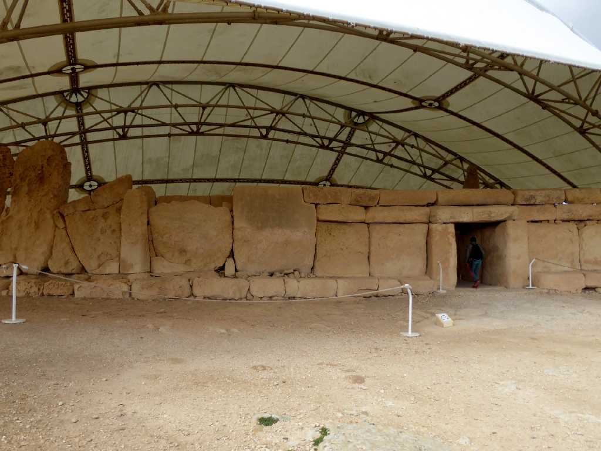
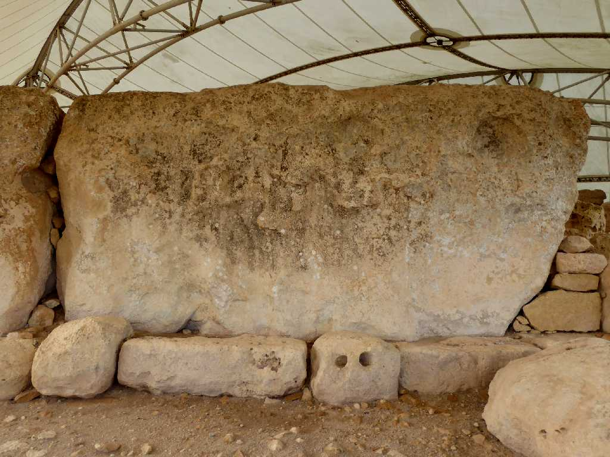
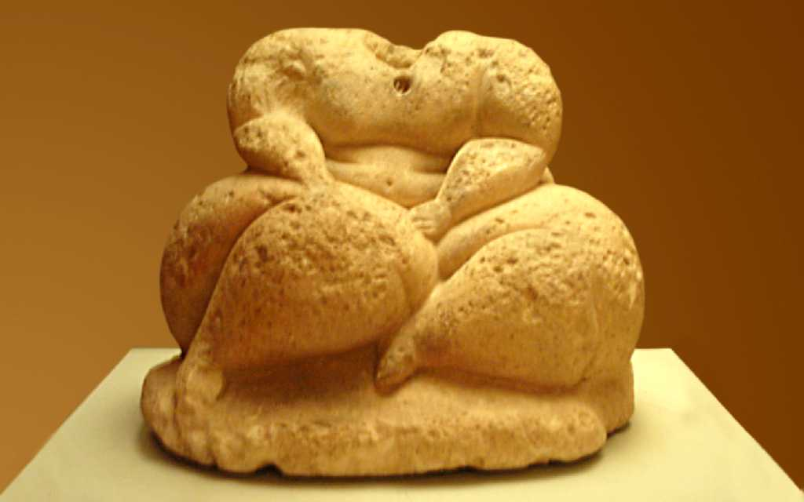
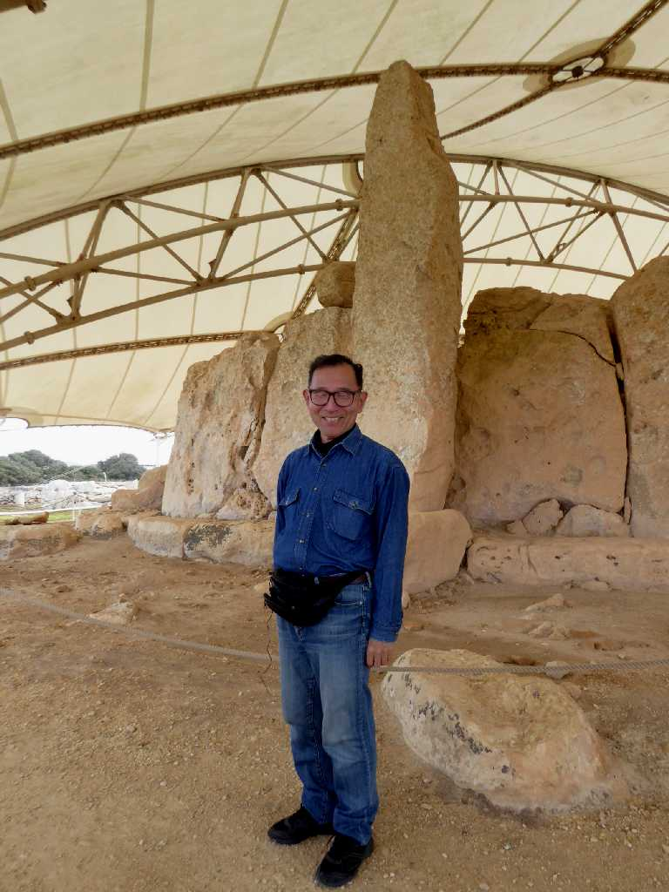

Ħaġar Qim
エジプトのピラミッドより１０００年余り前の紀元前３６００年～３２００年に創られた先史時代の巨石神殿ハジャーイム神殿

6.4m x 3m 20t Biggest stone Ħaġar Qim
先史時代の巨石神殿を生んだ謎の大陸アトランティスと繁栄した帝国伝説を想像する

The Fat Lady of Malta Ħaġar Qim
５,０００年前のマルタのレディーは豊満

March 3 2019 5.2m high stone Ħaġar Qim